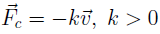
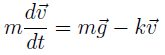
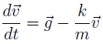
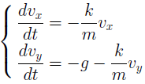
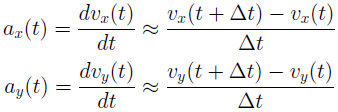
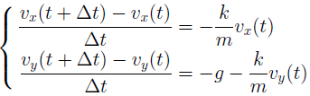
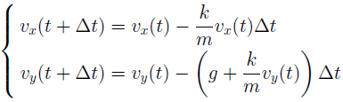
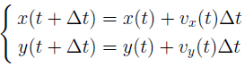

Движение тела в поле тяжести с учётом сопротивления воздуха
Цель задания - выяснить, как изменится траектория тела, если учитывать сопротивление воздуха
Рассмотрим случай когда сила сопротивления воздуха противоположно направлена с вектором скорости, и её величина пропорциональна скорости:
Второй закон приобретает вид:
Отсюда:
Запишем это равенство в скалярном виде:
Попробуем найти решения этих уравнений при помощи численных методов. При помощи численных методов мы получим лишь приближённое решение. Для этого введём на временной оси сетку: выберем число dt и будем рассматривать моменты времени вида 0, dt, 2dt, dt...
Заменим в уравнениях ускорение на среднюю скорость изменения скорости, рассматривая движение тела на промежутке времени dt:
Теперь подставим полученные аппроксимации в наши уравнения:
Отсюда:
аналогичным образом выразим закон движения тела и получим:
